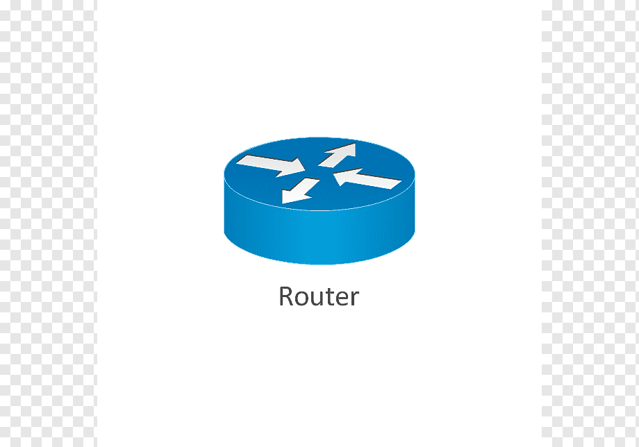
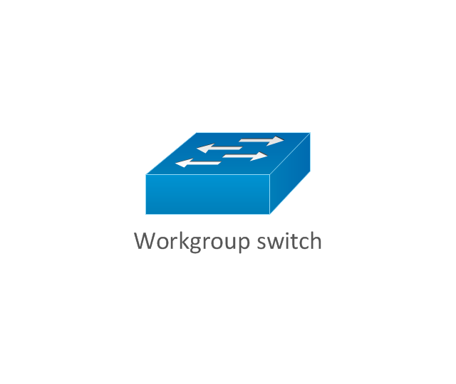

Routers
Routers are a piece of computer networking equipment that work at level 3 of the OSI model. They are used to connect two or more computer networks. This allows computers to communicate with computers on networks they are not a part of. Without them the internet could note exsist as it does today.
Switches
Switches are a piece of computer networking equipment that traditionally work at level 2 of the OSI model. They are used to connect two or more computers on the same computer network. This allows computers to communicate with other computers without risking collision of data. Without them computer networks would behave much more slowly or require more cabling.